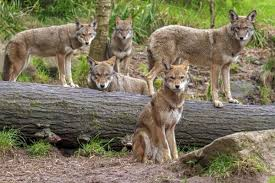
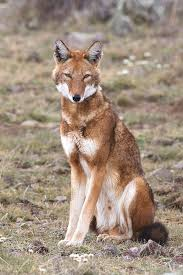

Sobre o lobo
O lobo (Canis lupus) é um mamífero carnívoro da família Canidae. É o maior membro selvagem dessa família e um dos predadores mais adaptáveis da Terra.
Os lobos se destacam pela inteligência, cooperação e habilidade de adaptação a ambientes extremos — desde florestas geladas até desertos frios. Eles são exemplos vivos de disciplina e estratégia natural.
Características físicas
O corpo do lobo é esguio e musculoso, com patas longas projetadas para percorrer grandes distâncias. Sua pelagem varia conforme o ambiente, garantindo camuflagem e proteção térmica.
- Altura média:
- 60–90 cm no ombro.
- Velocidade:
- Até 65 km/h em curtas distâncias; capaz de percorrer 50 km em uma única noite de caça.
- Sentidos:
- Olfato e audição extremamente aguçados; visão adaptada à pouca luz.
Mais do que força, o que define o lobo é sua **resistência**. Ele caça por persistência, não por velocidade. Sua sobrevivência é fruto de estratégia e trabalho coletivo.
Habitat e distribuição
Os lobos vivem em florestas, tundras, montanhas e desertos frios do hemisfério norte. Adaptação e mobilidade são chaves para sua sobrevivência.
Essa flexibilidade permite que sobrevivam em ambientes extremos, ajustando hábitos e dietas conforme as condições locais — uma das razões pelas quais o lobo é considerado um dos predadores mais versáteis do planeta.
“A presença dos lobos ajuda a manter o equilíbrio dos ecossistemas, controlando populações de herbívoros.” — National Geographic
Alimentação
Lobos são carnívoros, mas também podem se comportar como onívoros em tempos de escassez.
- Caçam em grupo, utilizando estratégias cooperativas e coordenadas.
- Preferem presas grandes como cervos e alces, mas se adaptam a roedores e carniça.
- Podem percorrer dezenas de quilômetros em busca de alimento, seguindo rastros por horas.
Durante a caça, os lobos analisam o terreno, testam a presa e só atacam quando têm vantagem real. Cada movimento é pensado — uma mistura de instinto e inteligência social.
Comportamento social
A matilha é a base da vida social dos lobos. Cada membro tem um papel definido dentro de uma hierarquia rígida e cooperativa.
- Alfa: líder da matilha, toma decisões e guia a caça.
- Beta: segundo em comando, mantém a ordem e disciplina do grupo.
- Filhotes: aprendem observando e imitando os adultos mais experientes.
O alfa não lidera pela força, mas pela confiança e respeito dos outros membros. A hierarquia evita conflitos e mantém a eficiência do grupo.
Além disso, os lobos possuem uma **comunicação complexa** baseada em uivos, rosnados e linguagem corporal: cada gesto, olhar ou som tem significado. Um simples movimento de cauda pode representar domínio, calma ou alerta.
Reprodução
Os lobos são monogâmicos, e o par alfa costuma ser o único a se reproduzir.
- Gestação: cerca de 63 dias.
- Ninhada média: 4 a 6 filhotes.
- Os filhotes nascem cegos e dependem totalmente da matilha para sobreviver.
Os adultos compartilham responsabilidades: caçam para alimentar os filhotes e os ensinam a viver em grupo. Essa estrutura reforça os laços de lealdade dentro da matilha.
Conservação
Apesar de já ter sido amplamente caçado, o lobo tem se recuperado em algumas regiões graças a programas de reintrodução e leis de proteção.
A presença dos lobos é essencial para manter o equilíbrio ecológico. Onde eles retornam, os ecossistemas tendem a se regenerar — como ocorreu no Parque de Yellowstone, nos EUA.
Lobo-vermelho:
Lobo-etíope:
Curiosidades
- O uivo ajuda a reunir a matilha e marcar território.
- Um lobo pode ouvir outro a mais de 10 km de distância.
- Na cultura nórdica, o lobo é símbolo de força e liberdade.
- Na natureza, o lobo raramente luta sem necessidade — evita desperdício de energia.
Além disso, lobos mais velhos ensinam os jovens a caçar e sobreviver, mostrando que o aprendizado social é vital para o grupo.
Simbologia e o Lobo Solitário
Em diversas culturas, o lobo representa **coragem, lealdade, inteligência e liberdade**. É um símbolo ambíguo — mistura o espírito guerreiro com o mistério da solidão.
Na mitologia nórdica, Fenrir representa a força incontrolável; entre os povos indígenas americanos, o lobo é o **guia espiritual do guerreiro**.
O “lobo solitário” surge quando um indivíduo é expulso ou abandona a matilha. Ele vive só, enfrenta o território por conta própria e às vezes cria uma nova matilha. É a imagem viva da **independência e resiliência**.